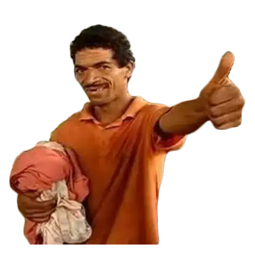

Sobre Nós
Bernardo Dalbosco
Nasceu em 15 de julho do ano de 2009 chorando e esperneando em Erechim.
Começou a programar aos 14 anos e está desenvolvendo o site que você tá acessando agora.
Objetivos
Nossos objetivos são fazer com que a geração escute um estilo musical bom e retirar o "todes" do vocabulário idiota.
